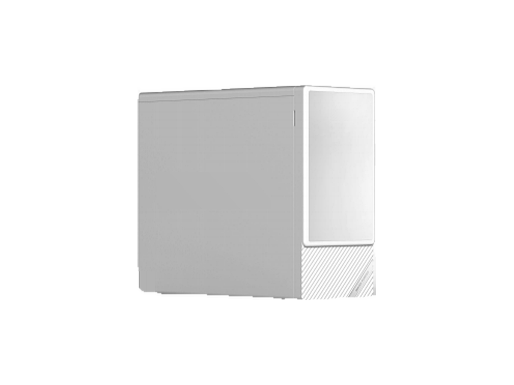
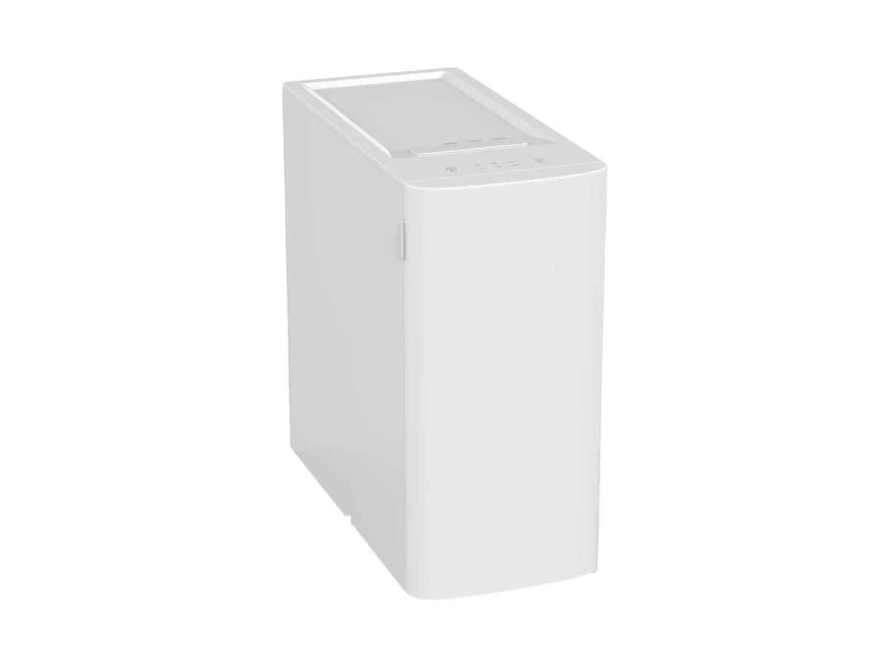
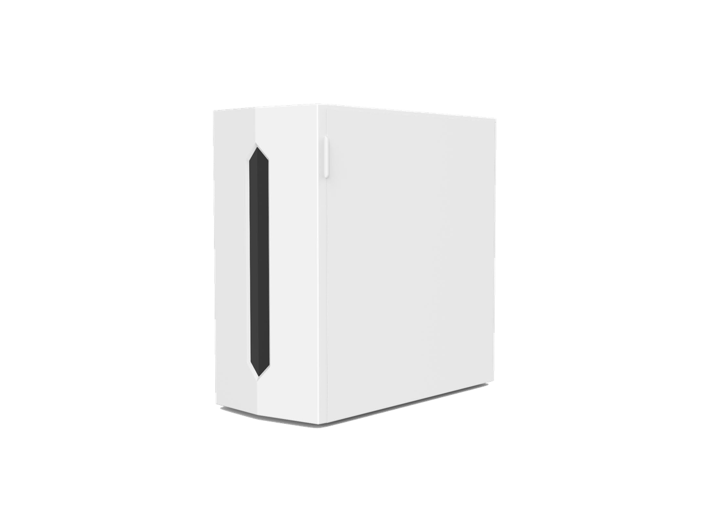

Under-Sink
Under-SinkRP-U07
400–600 GPD under-sink RO purifier
SKU: RP-U07
MOQ: Confirm on enquiry
Home / Products / Under-Sink RO Systems / RP-U06

Under-Sink RO Systems
Small-membrane RO with built-in tank — four options. Dual-engine leads the series.
RP-U06 is a small-membrane, built-in tank RO family: a compact RO membrane paired with an internal water tank, so the tank delivers high flow without a large membrane. Four options share the same idea and differ in tank size, membrane and heating — the dual-engine (400G membrane, 2L pressure tank, dual drinking + kitchen-wash outlets, 1.05 L/min pure-water flow); the 4.1L tank (100G, 4.1L built-in pure-water tank, 4–9 L/min); the 8L tank (50–150G, 8L built-in tank with UV, 2.5–5 L/min, with an optional 4-temperature instant-heating version); and the 7.5L tank (75/100G, 7.5L built-in pure-water tank with static UV, 5 L/min, side plug-in cartridge change, with an optional faucet thick-film heating version). Specifications are confirmed per model and order.
Voltage / frequency is configurable to the target country. Other configurations are confirmed per order.
Four built-in tank options — quote as RP-U06 and specify the option (dual-engine, 4.1L tank, 8L tank or 7.5L tank).
Hover over a variant image to see its specifications. On touch screens, tap an image.



Full specifications for each variant, side by side. The specification table further down shows RP-U06's values.
| Specification | RP-U06-1 — dual-engine (YRO-400G) | RP-U06-2 — 4.1L tank (M2503R) | RP-U06-3 — 8L tank, heating option (M922RN) | RP-U06-4 — 7.5L tank (AM601R) |
|---|---|---|---|---|
| RO membrane | 400G | 100G | 50–150G (200G available) | 75/100G |
| Tank | 2L pressure tank | 4.1L built-in pure-water tank | 8L built-in pure-water tank with UV | 7.5L built-in pure-water tank, static UV 99.9% |
| Output flow | Pure water 1.05 L/min; initial flow >4.2 L/min in first 3 seconds | 4–9 L/min | 2.5–5 L/min, equivalent ~1900G | 5 L/min |
| Outlets | Dual: drinking + kitchen wash | Single | Confirmed per order | Single |
| Heating | No heating | No heating | Optional: 4-temperature instant hot water, 2100W, 20 L/h | Optional: faucet thick-film heating, 2100W, 25/45/65/85/100°C |
| Dimensions (L×W×H) | Confirmed per order | 352 × 160 × 319 mm | Confirmed per order | 415 × 187 × 392 mm |
| Rated purified volume | 4000 L | 4000 L | 4000 L | 4000 L |
| Filtration | PAC composite + RO (2 cartridges) | PPC + RO + post-carbon | PPC + RO + C | PP + activated carbon composite + RO + post-carbon (3 cartridges, 4 layers) |
| Voltage / frequency | Configurable to target country | Configurable to target country | Configurable to target country | Configurable to target country |
22 specification rows from the ROPureOEM catalogue.
| RO membrane | 400G |
|---|---|
| Filtration | PAC composite + RO (2 cartridges); universal filter material |
| Pure-water flow | 1.05 L/min |
| Net-water flow | 2.0 L/min |
| Initial pure-water flow | >4.2 L/min in first 3 seconds (0.25 MPa, 25 °C tap water) |
| Rated total purified volume | 4000 L (pure water); 4000 L (net water) |
| Water efficiency | Grade 1; net-water production rate 0.65; desalination rate ≥93% (0.25 MPa, 25 °C tap water, after 30 minutes) |
| Rated power | 72 W |
| Noise | ≤55 dB(A) sound power |
| Pressure tank | 2 L |
| Faucet | Dual outlet: drinking + kitchen wash; grey mechanical faucet with knob control, 60 cm exposed |
| Heating | None |
| Filter-life reminder | Powered-on time + pump working time (dual calculation) |
| Flushing | Automatic; zero stale water (flushing program, no backflow) |
| TDS detection / sterilisation | None |
| Power-off memory | Yes |
| Working pressure before membrane | 0.4–0.8 MPa |
| Applicable water pressure / temperature | 0.1–0.4 MPa; 5–38 °C |
| Electric shock protection | Class II |
| Dimensions | Confirmed per order |
| Voltage / frequency | Configurable to target country (rated 220 V~, 50 Hz) |
| Other configurations | Confirmed per order |
Specifications are taken from the ROPureOEM catalogue. Where a value is not yet confirmed, it is listed as “Confirmed per order” — we do not publish unconfirmed figures.
Under-Sink400–600 GPD under-sink RO purifier
SKU: RP-U07
MOQ: Confirm on enquiry
 Under-Sink
Under-SinkUnder-sink RO with storage heating
SKU: RP-U08
MOQ: Confirm on enquiry
 Under-Sink
Under-SinkHigh-capacity front-access RO purifier
SKU: RP-U09
MOQ: Confirm on enquiry
 Under-Sink
Under-SinkThree-cartridge RO purifier
SKU: RP-U11
MOQ: Confirm on enquiry